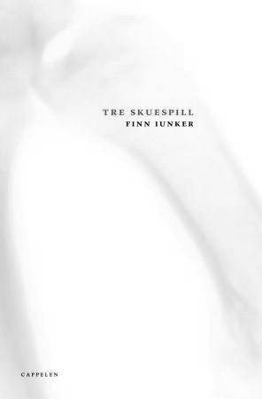

Leserom: Play Alter Nativ av Finn Iunker m/Pia Maria Roll
- Kategori:
- Kurs og workshops
Kurs og workshops
Åpent for profesjonelle skuespillere, dvs. treårig utdanning i skuespillerkunst eller tilsvarende profesjonell erfaring. - Dato:
- 08.05.2014 til 08.05.2014
- Start kl :
- 11:00
- Slutt kl :
- 16:00
- Pris:
- 300,-
- Adresse:
- Norsk Skuespillersenter, Welhavensgate 1, Oslo
 Leserom er et konsept der 10 skuespillere og en regissør bruker en dag på å dykke ned i en ny, norsk scenetekst. Sammen leser de stykket og diskuterer teksten. En uformell og avslappet måte å utforske norsk dramatikk på. Deltakerne får et eksemplar av boken inkludert i kursavgiften.
{kind=link}
Play Alter Native
Play Alter Native beskriver i et nesten matematisk lyst språk hvordan en forgiftet elv skaper strid mellom to stater.
Dersom det blir tid, kan det hende gruppa også kikker på andre av Iunkers verker.
Om Finn Iunker
Finn Iunker (f. 1969) er bosatt i Bergen. Stykkene hans er spilt i Tyskland, Østerrike, Danmark, England, Belgia, Nederland, Portugal og Canada. Ifigeneia og Helena hadde begge urpremiere i Antwerpen i 2003 og ble innstilt til Nordisk dramatikerpris samme år. Play Alter Native hadde urpremiere i Amsterdam i 1999 og ble sist produsert i Lisboa i mai 2004.
Om Pia Maria Roll
Pia Maria Roll er scenekunstner og dramatiker og har fått mye oppmerksomhet for bl a forestillinger som Over Evne III og Ship O´Hoi!, som hun lagde i samarbeid med henholdsvis Marius Kolbenstvedt og Hooman Sharifi. Ship O´Hoi! mottok Torshovteaterets Venners Pris og ble nominert til Heddapris for beste forestilling 2013.
Pris for medlemmer av NSF: 250,-
Tips: Pia Maria Roll leder også workshopen «Den skapende utøveren» med utgangspunkt i eget kunstnerisk arbeid fra 28. - 30. april!